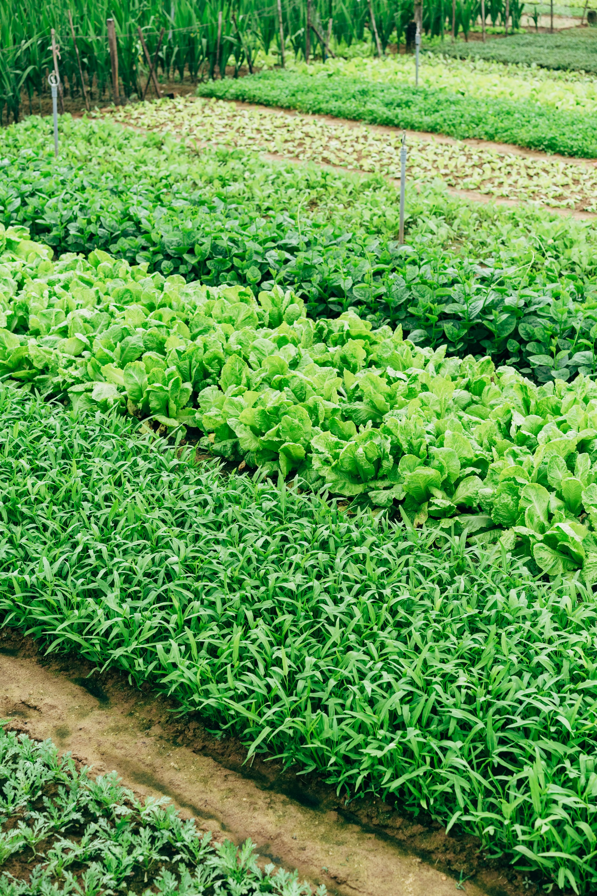

Grouped Sustainable Agroforestry Project
Scale: 30,000 Hectares
Partners: Clime Trek Limited
Number of farmers: 26,498

Enhancing Rural Livelihoods of Farmers Through Carbon Finance
Scale: 17,400 Hectares
Partners: South Pole
Number of farmers: 14,300

GKF Agroforestry Project in Telangana
Scale: 10,000 Hectares
Partners: Emergent Ventures India
Number of farmers: 12,000

Agroforestry for enhancing the samll holders livelihood in Karnataka and Andhra Pradesh
Scale: 11,000 Hectares
Number of farmers: 10,000